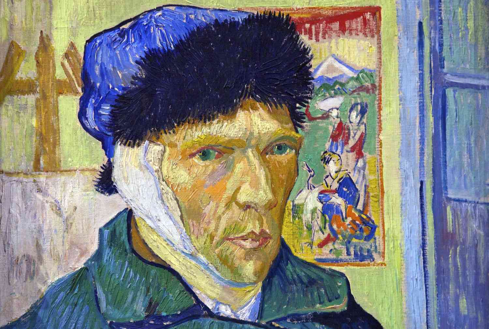
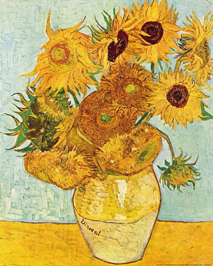
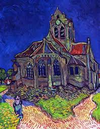
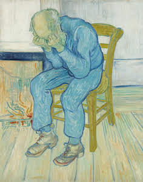

My Blog
Vincent van Gogh
Dutch painter
Vincent Willem van Gogh was a Dutch Post-Impressionist painter who is among the most famous and influential figures in the history of Western art. In just over a decade he created approximately 2100 artworks, including around 860 oil paintings, most of them in the last two years of his life.
Starry Night

The Starry Night is an oil-on-canvas painting by the Dutch Post-Impressionist painter Vincent van Gogh. Painted in June 1889, it depicts the view from the east-facing window of his asylum room at Saint-Rémy-de-Provence, just before sunrise, with the addition of an imaginary village.
Location: The Museum of Modern Art
Created: June 1889–June 1889
Medium: Oil Paint
Periods: Post-Impressionism, Modern art
Self-portrait
Self-portrait with Bandage it shows the artist in three-quarter profile standing in a room in the Yellow House wearing a closed coat and a fur cap. His right ear is bandaged. It was in fact his left ear that was bandaged, the painting being a mirror image. To his right is an easel with a canvas on it.
Location: The Getty
Created: 1889
Subject: Irises
Medium: Oil Paint
Vase with Twelve Sunflowers
Vase with Twelve Sunflowers Gogh broke free from the dark palette of his Dutch master-inspired art when he painted his explosively bright sunflower paintings. The first series, completed in 1887 while he lived in Paris, showed sunflower clippings laying on the ground.
Location: Kröller-Müller Museum
Periods: Post-Impressionism, Cloisonnism
Created: September 1888–September 16, 1888
Medium: Oil painting
The Church at Auvers
The Church at Auvers is an oil painting created by Dutch post-impressionist artist Vincent van Gogh in June 1890 which now hangs in the Musée d'Orsay in Paris, France. The actual church is in Place de l'Eglise, Auvers-sur-Oise, France, 27 kilometres north-west of Paris.
Created: June 1890
Periods: Post-Impressionism, Modern art
Medium: Oil Paint
Genre: Landscape painting
Sorrowing Old Man
Sorrowing Old Man an oil painting by Vincent van Gogh that he made in 1890 in Saint-Rémy de Provence based on an early lithograph.
Location: Kröller-Müller Museum
Genre: Genre art
Created: May 1890
Medium: Oil Paint
Dimensions: 80 cm × 64 cm (31.5 in × 21.2 in)